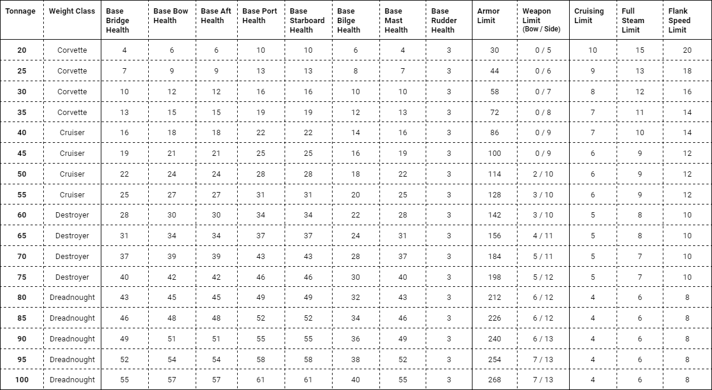
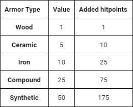
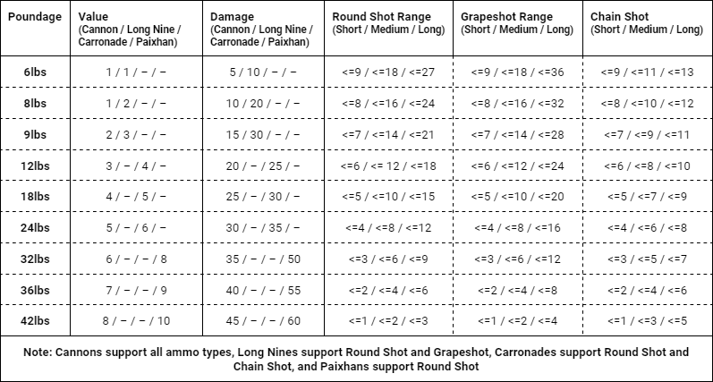
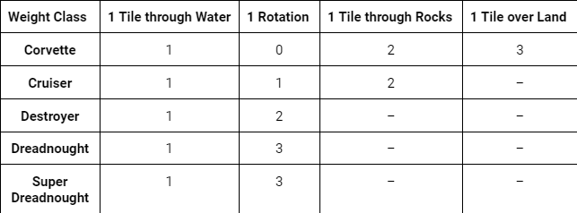

Ships
The entire game of Scalawag Seas in built on the construction of ships. The stats of each ship are determined by its tonnage, or weight in tons. These tonnages are placed into one of 5 weight classes; Corvette, Cruiser, Destroyer, Dreadnought, and Super-Dreadnought. Please refer to the table below for a rough list of statistics for each tonnage. Health and Limits will be explained later.
Jhonny has a ship with a tonnage of 45 tons. This means that he has a Corvette class ship.
Ship Anatomy
Each ship is split into 8 areas; the Bridge, Bow, Aft, Port, Starboard, Bilge, Mast, and Rudder. Each of these areas has a set base health, as shown in the table above. This health is what determines how many hits a ship can take during a match, and a ship is sunk if its Bridge or Bilge is destroyed. Additionally, all weapons are mounted on the Bow, Port, and Starboard of the ship, a ship may not turn without its Rudder, and a ship may not Flank without its Mast.
Jhonny's ship, being a 45 ton boat, has health values of 19, 21, 25, 16, 19, and 3 for the Bridge, Bow and Aft, Port and Starboard, Bilge, Mast, and Rudder respectively. Keep in mind that the values respective to the Bow and Aft are not split between them, but are applied to each of them so that each the Bow and Aft has a health of 25, same with the Port and Starboard.
Ship Armory
Each ship has a certain amount of armor that can be applied to it. This statistic is determined by the tonnage, as seen in the Armory Limit in the table above, and is universal, meaning that each area does not have its own value but placing or removing armor on one area affects the amount of armor that can be applied to all areas. There are 5 armor materials; Wood, Ceramic, Iron, Compund, and Synthetic. One application of an armor type to an area costs 1, 5, 10, 25, and 50 points respectively, so Wood armor costs 1 point, Ceramic costs 5 points, Iron costs 10, and so on. Each armor type adds a certain amount to the health of the area that it is applied to. Wood armor gives 1 points for every application, Ceramic gives 10, Iron gives 25, Compound gives 75, and Synthetic gives 175. For more information on armor types, please refer to the table below.
Since Jhonny's ship is 45 tons, he has an Armory Limit of 100 points. Since he has 8 areas on his ship, he may apply 1 layer of Iron and 2 layers of Wood to each area, with 4 points remaining for wherever he thinks he'll need them the most.
Ship Weaponry
Each ship has a certain number of weapons that it can hold. This statistic is determined by the tonnage, as seen in the Weaponry Limits in the table in the Ships section. There are 4 types of weapons that can be added to a ship; the Cannon, Long Nine, Carronade, and Paixhan. There are also 3 ammo types; Round Shot, Grapeshot, and Chain Shot. Finally, there are 9 poundages; 6lbs, 8, 9, 12, 18, 24, 32, 36, and 42. Cannons are the basic weapon, being compatible with every ammo type and poundage, and costing the least points per instance. Long Nines are the long range options, dealing more damage at longer ranges but only supporting 6, 8, and 9lbs and not supporting Chain Shot. Carronades are the middle of the road, offering more damage at less range, any only supporting poundages 12-24 and not supporting Grapeshot. Paixhans are the biggest and strongest cannons, but have very limited range and only support poundages 32-42 and only firing Round Shot. Additionally, for each weapon added to a ship, the player gets 5 of an ammo of their choice, assuming their choice is compatible with the weapon being added. For a full list of weapons, the supported poundages and ammo types, and ranges in tiles, please refer to the table below.
Since Jhonny's ship is 45 tons, it has 0 weapon points on the Bow, 9 on the port, and 9 on the Starboard. He decided to add 3 9lb Long Nines to each side. Since he added 6 weapons to his ship, he will gain a total of 30 rounds of ammunition. He decides that he will have 4 of his weapons come with Round Shot, and the other two will come with Grapeshot. After this, his ship is loaded with 20 Round Shot and 10 Grapeshot.
Phases
A round of Scalawag Seas is split into three phases: Initiative, Movement, and Combat.These phases are always repeated each round, but players may skip their Movement or Combat phases if they so choose.
Initiative
During the Initiative phase, each player will randomly be given a number between 2 and 12. This number decides the order of players in each subsequent phase. The player with the lowest number goes first, then the player with the next lowest, and so on. If there is a tie, the players in question will get new numbers. This phase is repeated every round.
Timmy, Jimmy, and Jhonny are playing a game of Scalawag Seas. During their first Initiative phase, Jimmy gets an 8, and both Timmy and Jhonny get 7s. After getting new numbers, Timmy gets a 5 and Jhonny gets a 9. For this turn, Jhonny will go first in both the Movement and Combat phases, then Jimmy, then Timmy.
Movement
During the Movement phase, each player moves his or her ship according to the amount of movement points it has. Each ship has 3 options for movement; Cruising, Full Steam, and Flanking. Cruising is the slowest option, but it offers ships the ability to not only turn but go backward. Full Steam is the middle of the road when it comes to movement, being faster than Cruising and allowing turning but still slower than Flanking and disallowing backwards movement. Flanking is the fastest, but any ship that is Flanking may only go forward; no turning or going backwards while doing so. Each ship may decide to do one of these actions in its Movement phase. Additionally, each ship gets a turning penalty depending on its weight class. Those in the Corvette class have no penalty to turning, Cruiser class ships have a turning penalty of 1, Destroyers have 2, and Dreadnoughts and Super-Dreadnoughts have 3. Please refer to the table below for more information on movement options and how many points they cost.
Jhonny is using a 45 ton boat. Thus, he has 7 Cruising points, 11 Full Steam points, and 15 Flanking points. He decides that his ship will go Full Steam this turn. He moves his ship forward 5 tiles for 5 points, rotates counterclockwise twice for 0 points since his ship is a Corvette, and moves forward again 6 points. He has now used all 11 of his Full Steam points, and since he cannot move anymore, his turn is over.